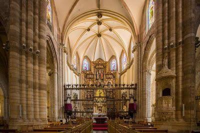

La Catedral de Murcia, oficialmente conocida como la Catedral de Santa María, es un destacado ejemplo de arquitectura gótica y renacentista en España.Su construcción comenzó en el siglo XIV y se completó en el siglo XVIII, lo que refleja una mezcla de estilos arquitectónicos a lo largo de los años.La catedral alberga importantes obras de arte, incluyendo retablos, esculturas y pinturas que representan la rica historia religiosa y cultural de la región.Su imponente fachada barroca y su torre campanario son elementos distintivos que atraen a visitantes y turistas de todo el mundo.
En este enlace podras obtener mas informacion Catedral de Murcia